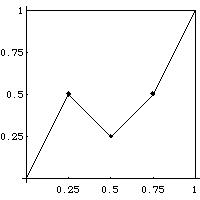

| 1. (a) From the picture of the generator, we compute |
|  |
| dY1 = 0.5, dY2 = -0.25, dY3 = 0.25, dY4 = 0.5 |
| dt1 = dt2 = dt3 = dt4 = 0.25 |
| (b) All the dti are equal, not all the dYi are equal, so
not all the Hi = |
| (c) To find the Trading time generators, first solve the equation |
| |dY1|D + |dY2|D + |dY3|D + |dY4|D = 1 |
| Here this becomes |
| .5D + .25D + .25D + .5D = 1 |
| The solution is D = 1.45 |
| Then the Trading time generators are dTi = |dYi|D. That is, |
| dT1 = dT4 = .51.45 = 0.366 and dT2 = dT3 = .251.45 = 0.134 |
Return to Homework 7 Practice.